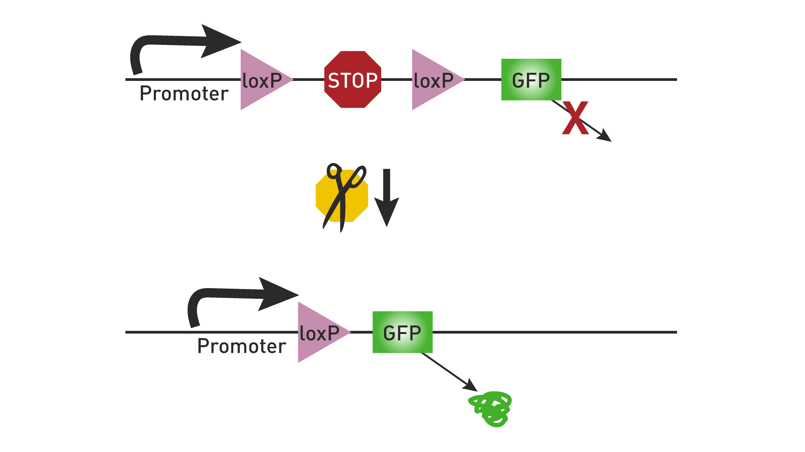
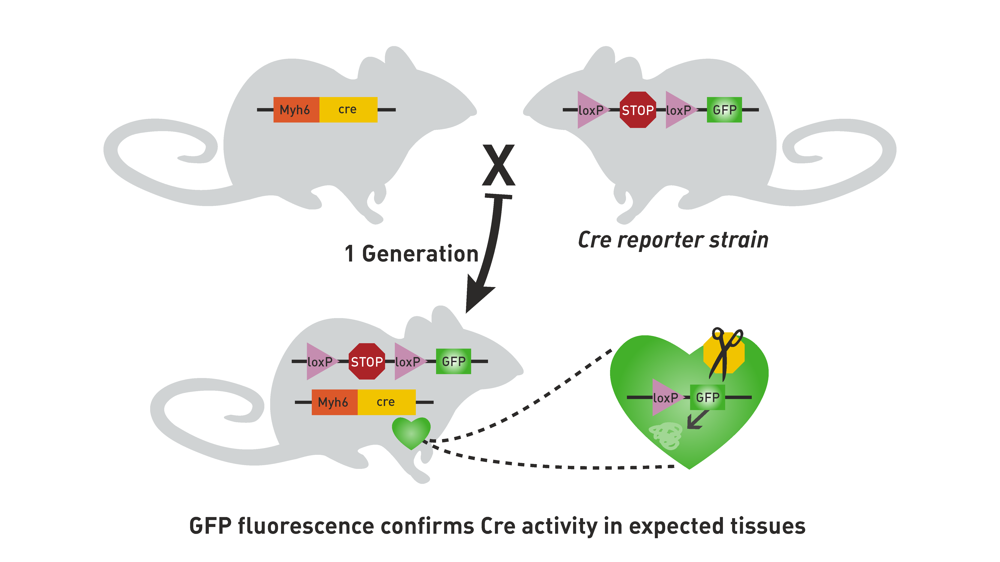

Transgenic tools#
There are a large number of transgenic tools available that enable scientists to visualize, record, and manipulate cells in the mouse. We will briefly describe the general transgenic approaches that we use here, but this is not an exhaustive explanation of this full space.
Cre/lox recombination approaches#
The Cre/lox recombination system is a conditional approach that allows genes to be removed or expressed within specific tissues or cell types. Cre is a site-specific recombinase that drives the recombination of DNA specifically at lox-P sites. Engineering loxP on either side of a gene of interest in a cell that expresses Cre will result in that gene being removed from that cell. This technique can be used to induce the expression of a gene of interest by having a loxP-STOP-loxP sequence in front of the gene of interest. Without Cre, this gene will not be expressed due to the STOP sequence. But when Cre is present, the STOP sequence is removed, and the gene will be expressed. This is how we have used Cre lines in these experiments to drive the expression of chosen reporters.
{kind=link}

Fig. 2 Excising a STOP sequence with Cre induces expression of the gene of interest. Image taken from The Jackson Laboratory. :::#
Genes of interest can be inserted into the mouse with the use of viruses, or the creation of transgenic mouse lines that have the gene inserted into their genome. A common technique for using transgenic mice is to create separate driver lines and reporter lines, then crossing them together in order to get the desired gene into the desired brain region/cell type/etc. This is much more efficient than making making a separate line for every possible gene to be directly expressed in every possible cell type: driver and reporter lines allow us to “mix and match” and create the exact combination we need for a given experiment.
{kind=link}

Fig. 3 Crossing a driver line with a reporter line results in offspring expressing the reporter in a subset of cells defined by the driver line. Image taken from The Jackson Laboratory.#
Driver lines used here#
A driver line is a transgenic mouse line in which mice have had the gene for Cre or another recombinase (such as tTA) inserted into their genome, commonly under the control of a specific promoter. Promoters are often expressed pretty broadly across the brain, but can also be extremely specific. Here are the driver lines and their expression patterns for lines used in our data sets. Note that in the absence of a reporter, Cre on its own does not greatly affect the mouse’s physiology.
- Adora2a-Cre
In striatum, drives expression in medium spiny neurons (MSNs) expressing the D2 dopamine receptor. These are MSNs part of the indirect pathway.
- Camk2a-tTA
The is a broadly expressed promoter that uses the tetracycline-controlled transactivator protein (tTA) to drive the expression of reporters under the TRE or tetO element. In many of our applications, we combine both Cre and tTA to drive the expression of our reporters.
Cart-IRES2-Cre :
- Chat-IRES-Cre-neo
Drives expression in cholinergic neurons.
- Cux2-CreERT2
In cortex, drives expression in excitatory neurons in layer 2/3 and 4.
- Dbh-Cre-KI
Drives expression in noradrenergic and adrenegic neurons - i.e. neurons that release norepinephrine.
- Drd1a-Cre
In striatum, drives expression in medium spiny neurons (MSNs) expressing the D1 dopamine receptor. These are MSNs part of the direct pathway.
- Emx1-IRES-Cre
In cortex, a pan-excitatory driver - drives expression in excitatory neurons across all layers. Imaged here in layer 2/3, 4, and 5. Emx1-IRES-Cre;Camk2a-tTA;Ai93 and Emx1-IRES-Cre;Camk2a-tTA;Ai94 mice were found to exhibit inter-ictal events suggesting that the dense expression of GCaMP6 throughout development could be disrupting normal physiological activity. [Steinmetz et al., 2017]
- Fezf2-CreER
In cortex, drives expression in corticofugal excitatory neurons in layer 5.
Gal-Cre_KI187 :
- Nr5a1-Cre
In cortex, drives expression in excitatory neurons in layer 6.
- Ntsr1-Cre_GN220
In cortex, drives expression in a sub-population of excitatory neurons in layer 4.
- Pvalb-IRES-Cre
Drives expression in Parvalbumin inhibitory interneurons.
- Rbp4-IRES2-Cre
In cortex, drives expression in excitatory neurons in layer 5.
- Rorb-IRES2-Cre
In cortex, drives expression in a sub-population of excitatory neurons in layer 4.
- Scnn1a-Tg3-Cre
In cortex, drives expression in a sub-population of excitatory neurons in layer 4. Only found in primary sensory areas (e.g. VISp)
- Slc17a6-IRES-Cre
A pan-excitatory driver - drives expression in excitatory neurons - with weak expression in cortex.
- Slc17a7-IRES2-Cre
In cortex, a pan-excitatory driver - drives expression in excitatory neurons across all layers. Imaged here in layer 2/3, 4, and 5.
- Sst-IRES-Cre
Drives expression in Somatostatin inhibitory interneurons.
- Tlx3-Cre_PL56
In cortex, drives expression in cortico-cortical projecting excitatory neurons in layer 5.
- Vip-IRES-Cre
Drives expression in Vasoactive Intestinal Peptide inhibitory interneurons.
Reporter lines used here#
A reporter line is a transgenic mouse line in which mice have had the gene for a reporter inserted into their genome, with a lox-STOP-lox preceding it so that expression does not occur in the absence of Cre. Common reporters are fluorescent proteins (like GFP), opsins (like ChR2), or calcium indicators (like GCaMP). Here are the reporter lines used in our data sets:
- Ai93
TITL-GCaMP6f-D. Cre/Tet dependent fluorescent GCaMP6f indicator expressing GCaMP6 fast. This is often used alongside Camk2a-tTA to enhance the expression in excitatory neurons.
- Ai94
TITL-GCaMP6s;Rosa26-ZtTA. Cre/Tet dependent fluorescent GCaMP6s indicator expressing GCaMP6 slow. This is often used alongside Camk2a-tTA to enhance the expression in excitatory neurons.
- Ai148
TIT2L-GC6f-ICL-tTA2_D. Cre/Tet dependent fluorescent GCaMP6f indicator expressing GCaMP6 fast. This is a second generation reporter that uses a new TIGRE2 construct that contains more tTA to drive higher expression.
- Ai162
TIT2L-GC6s-ICL-tTA2_D. Cre/Tet dependent fluorescent GCaMP6s indicator expressing GCaMP6 slow. This is a second generation reporter that uses a new TIGRE2 construct that contains more tTA to drives higher expression.
- Ai166
TIT2L-MORF-ICL-tTA2. A Cre dependent reporter that drives sparse labeling with GFP. The MORF introduces a stochastic translational switch, only labeling 1-5% of Cre+ neurons.
- Ai32
Rosa-CAG-LSL-ChR2(H134R)-EYFP-WPRE. Cre dependent expression of channelrhodopsin-2 (with a gain of function H134R substitution) fused to enhanced yellow fluorescent protein (EYFP) for visualization. Cells expressing ChR2(H134R) are rapidly depolarized by illumination with blue light (450-490 nm).
Viruses used here#
Another technique for delivering transgenes to a mouse is to use viruses, typically adeno-associated viruses (AAVs). The gene of interest is inserted into the AAV genome, so that when a mouse if injected the the virus, the inserted gene is delivered to infected cells. Viruses are commonly used together with driver or reporter lines, though the recently developed enhancer viruses allow delivery of transgenes to specific cell populations even in wild-type mice. Here are the viruses used in our data sets:
Traditional AAVs#
These AAVs can be paired with driver or reporter lines to drive expression of the gene of interest. In our specific data sets, we injected viruses containing floxed (flanked by loxp) genes into mouse driver lines, ensuring that expression only takes place if the gene infects a cell that is already expressing Cre.
- AAV2-Syn-Flex-ChrimsonR-tdTomato
Cre dependent expression of ChrimsonR, fused with tdTomato for visualization.
- pAAV-Ef1a-DIO-ChRmine-mScarlet-WPRE
Cre dependent expression of ChRmine, fused with mScarlet for visualization.
- AAV5-hSyn-DIO-somBiPOLES-mCerulean
Cre dependent expression of BiPOLES, fused with mCerulean for visualization.
- AAV-PHP-eB_Syn-Flex-2xTRE-tTA
Cre dependent tTA promoter. Often this is used to regulate the gain of expression of Cre/Tet dependent reporters - e.g. to get sparse but strong labeling.
- AAV-PHP-eB-7xTRE-3x-GFP
A Cre/Tet dependent reporter that expresses GFP.
- AAV-PHP-eB-7xTRE-TdTomato
A Cre/Tet dependent reporter that expresses TdTomato, a red fluorescent protein.
Enhancer AAVs#
These AAVs deliver genes together with an enhancer sequence. These enhancers have been selected based on their abundance in specific cell types: as such, the gene will only expressed if the virus infects a cell that makes use of this specific enhancer. This allows us to deliver genes directly to a specific cell type without needing to use a driver line.
- D1 enhancer - CoChR
rAAV-3xcore2_eHGT_779m-minBG-CoChR-EGFP-WPRE3-BGHpA. Drives expression of CoChR in direct pathway MSNs, fused with GFP for visualization.
- D2 enhancer - CoChR
rAAV-3xcore2_eHGT_445h-minBG-CoChR-EGFP-WPRE3-BGHpA or rAAV-3xcore2_eHGT_452h-minBG-CoChR-EGFP-WPRE3-BGHpA. Drives expression of CoChR in indirect pathway MSNs, fused with GFP for visualization.